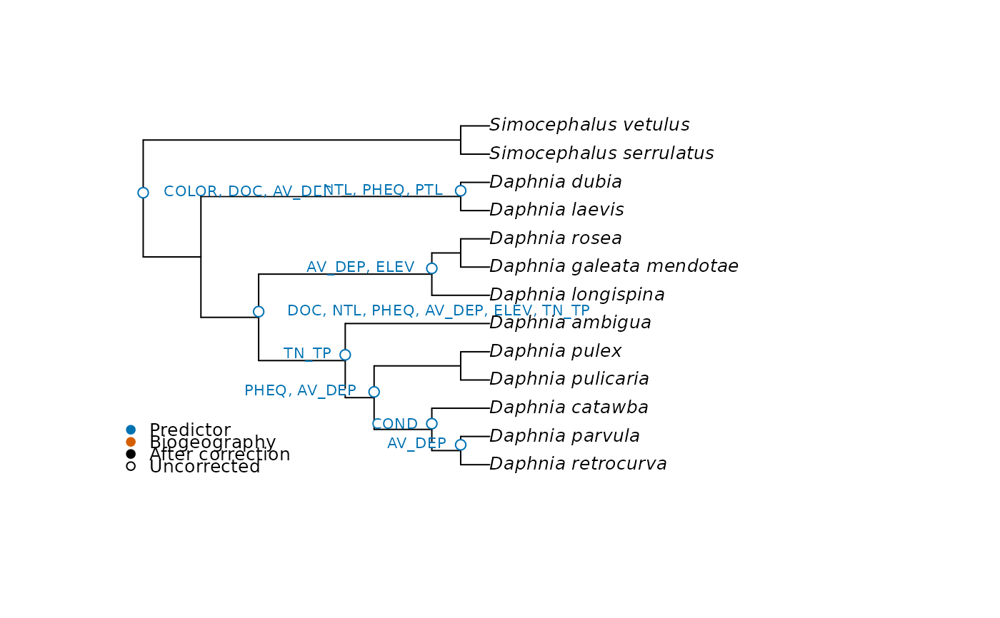

Implements the regression of Leibold et al. (2010). For each node, sites without species of that node are removed, the contrast is standardised with species weights and summed within sites, and the result is regressed on the predictors standardised with site weights, using site richness as weights. Each node shows whether the two clades that split there differ in their response to the predictors.
Usage
node_test(
comm,
nodes,
env,
biogeography = NULL,
n_perm = 999,
cores = 1,
site_permutations = NULL,
area_permutations = NULL
)Arguments
- comm
Matrix with one row per site and one column per species. Species are matched to the rows of
nodesby name, in any order, and those in only one of the two are dropped with a warning.- nodes
Matrix of contrasts with one row per species, from
node_contrasts().- env
Predictor, or matrix or data frame of predictors, with one row per site.
- biogeography
Optional matrix of biogeographic events with one row per site and values of 1, -1 and 0.
- n_perm
Number of permutations of sites, of species and of both. With
site_permutations, only of species.- cores
Number of cores, with nodes run in parallel. Not available on Windows, where one core is used. For reproducible p-values with more than one core, call
RNGkind("L'Ecuyer-CMRG")beforeset.seed(). Results still depend on the number of cores.- site_permutations
Optional matrix of site indices with one permutation per row, for example from
torus_permutations(), to use instead of free permutations of sites.- area_permutations
Optional list with one matrix per event, from
patch_permutations(), to use for the events instead ofsite_permutationsor free permutations. Sites must be in the order ofcomm.
Value
List of class mc_node_test with nodes, a data frame with one row per
node with node, n_species, n_sites, r2, r2_adjusted, r2_weighted, statistic,
p_site, p_taxa, p_max, p_joint, n_draws, the valid draws of sites, since a
draw without variance does not count, and p_adjusted; semipartial, a matrix of
nodes by predictors; p_partial, with the larger of the two p-values for each of
them; p_partial_site, with the p-values of sites alone; p_partial_joint, with
those of the permutation of the article; biogeography, a list with the same
four matrices for the events, or NULL; and permutations, the numbers of
permutations and whether those of sites were free or restricted.
Details
The test statistic is the explained over the residual sum of squares. It is
tested by permuting sites, and by replacing the species of the node with a random
set of the same size from all species. Following Peres-Neto et al. (2012) and ter Braak
et al. (2012), the p-value to report is the larger of the two tests. With many nodes these p-values need a correction, and
p_adjusted gives the false discovery rate that the article uses. This correction
needs many permutations, as the smallest p-value is 1 / (n_perm + 1). The article used
9999, which is advisable with many nodes.
The article permutes sites and species at once, which is p_joint. This tests the
null hypothesis that neither the environment nor the phylogeny matters, so it is not
a test of their association. In simulations where the environment acts but species
responses have no phylogenetic signal, p_joint rejected 76% of the nodes at the 5%
level, and p_max 4.8%.
With few species at a node, permutations of species have little power, so p_max is
conservative: with the daphniids of the article, of 13 species, no predictor passes
it, whereas sites alone recover most of the environmental results of its Figure 3 (see
the article on validation).
Each predictor gets a semipartial correlation, the square root of the loss of R2 when it is removed, with the sign of its slope when it is alone in the model.
Biogeographic events follow the article: a column of biogeography has 1 for sites
in one area, -1 for sites in the other and 0 for sites in neither. Each event is
tested only in its sites, controlling for env. Other contrasts are allowed, for
example a column without zeros, which compares one area with all the others. Events
with few sites in one area give unstable values. biogeography_matrix() builds the
matrix from the area of each site.
Free permutations treat sites as exchangeable. When sites of an area are neighbours and
the community has spatial structure of its own, they reject too often: 45% of tests at
the 5% level in a simulation with areas placed at random, against 5% with
torus_permutations() (see the article on analysing clades). site_permutations accepts
a restricted null model. For events, each row moves the areas across the sites, which
keep their community and predictors. In a landscape with edges, patch_permutations()
gives the permutations of each event for area_permutations.
R2, adjusted R2 and the statistic equal those of the MATLAB function
MetacommunityPhylogenetics of the authors, checked in Octave. Four parts of that
function differ from this one:
In the original, the species permutations shuffle only the first columns of the community matrix, as many as there are species in the node, so they do not draw from all species. Here they do.
The original keeps the total of the observed data after permuting species. Here it is recalculated.
The semipartial values of the original use the raw predictors, without an intercept, and multiply by the absolute slope. The article uses standardised predictors and divides by it, to keep only the sign, which is what we do.
The original compares the permuted statistics as they are. The one of each predictor divides a proportion by a sum of squares, so it depends on the scale of the response, and with one predictor it does not rank draws as the global one does. Neither takes into account that draws of species occupy different numbers of sites. Here draws are ranked on F statistics.
statisticis still the one of the original, and p-values of sites alone are the same, but those that use species differ.
As in the original, R2 sums squares without site weights, although the fit
uses them, so it is not the R2 of a weighted regression and can exceed 1. The adjusted
R2 uses the degrees of freedom of an unweighted model. r2_weighted sums squares with the
site weights, stays between 0 and 1, and is the value to report as a proportion.
Nodes for which a predictor has no variance among the remaining sites, with too
few sites, or with a clade without individuals get NA. The original stops with an
error.
Sites are matched by name when comm, env and biogeography all have row names, and
otherwise by position.
Note
Adapted from the MATLAB function MetacommunityPhylogenetics in the supplement of
Leibold et al. (2010), with the differences listed in Details.
References
Leibold, M. A., Economo, E. P., & Peres-Neto, P. (2010). Metacommunity phylogenetics: separating the roles of environmental filters and historical biogeography. Ecology Letters, 13, 1290–1299. doi:10.1111/j.1461-0248.2010.01523.x
Peres-Neto, P. R., Leibold, M. A., & Dray, S. (2012). Assessing the effects of spatial contingency and environmental filtering on metacommunity phylogenetics. Ecology, 93, S14–S30. doi:10.1890/11-0494.1
ter Braak, C. J. F., Cormont, A., & Dray, S. (2012). Improved testing of species traits-environment relationships in the fourth-corner problem. Ecology, 93, 1525–1526.
See also
biogeography_matrix() codes the events and patch_permutations() moves them in
a landscape with edges. plot_node_test() and
plot_node_heatmap() show the results. pcc_test() and
phylo_beta_test() test the whole tree at once.
Examples
# daphniids of Leibold et al. (2010)
nodes <- node_contrasts(daphniids$tree)
set.seed(1)
out <- node_test(daphniids$comm, nodes, daphniids$env, n_perm = 49)
out
#> <mc_node_test> 12 nodes, 11 tested
#> permutations: 49 free of sites, 49 of species; smallest possible p: 0.02
#> nodes with p (max) <= 0.05: 0 before correction, 0 after
#> nodes not tested: 1 (a clade without individuals, too few sites or a predictor without variance in the sites of the node)
round(out$semipartial, 2)
#> COLOR COND DOC NTL PHEQ PTL AV_DEP ELEV TN_TP
#> 14 0.17 0.06 0.20 0.06 0.02 0.01 -0.26 -0.12 0.00
#> 15 -0.04 -0.07 -0.04 -0.04 0.09 0.02 0.08 0.12 0.03
#> 16 -0.04 0.00 -0.18 -0.16 0.30 -0.06 0.29 0.19 0.19
#> 17 0.02 0.03 0.07 0.11 -0.13 -0.07 -0.05 -0.21 -0.16
#> 18 -0.01 0.06 -0.06 -0.06 0.28 0.03 0.20 0.14 0.14
#> 19 0.00 -0.20 -0.02 -0.15 -0.01 -0.05 0.06 0.01 0.00
#> 20 -0.03 0.11 -0.09 0.05 -0.16 0.03 -0.36 0.00 0.00
#> 21 -0.28 0.19 -0.24 0.39 0.01 0.15 -0.15 -0.35 -0.17
#> 22 0.03 0.01 0.06 0.00 0.13 0.06 -0.29 -0.21 -0.03
#> 23 0.33 -0.02 0.28 -0.02 0.15 0.04 -0.13 0.07 -0.02
#> 24 -0.14 -0.11 -0.04 -0.39 0.31 -0.50 0.04 0.01 0.25
#> 25 NA NA NA NA NA NA NA NA NA
plot_node_test(out, daphniids$tree, test = "site")
